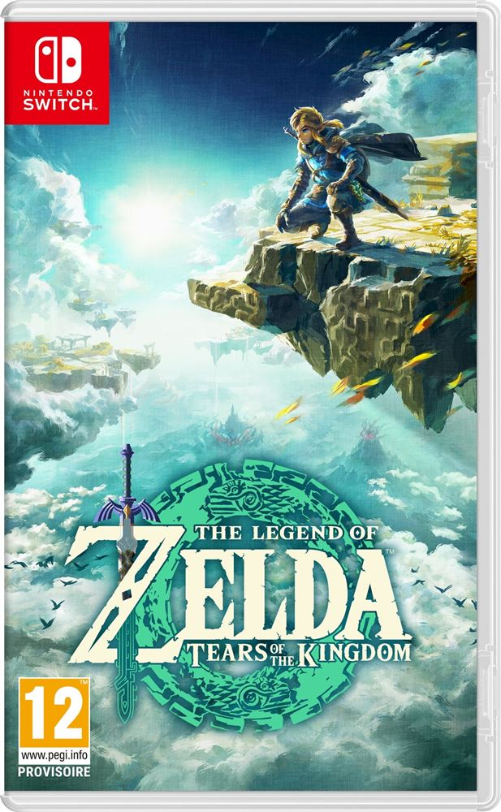
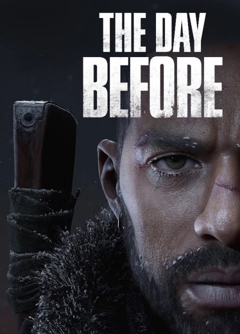

Hogwarts Legacy :
Hogwarts Legacy est un jeu vidéo d'action-RPG développé par Avalanche Software et édité par Warner Bros. Interactive Entertainment. Le jeu se déroule dans l'univers de Harry Potter, plus précisément au 19ème siècle, et permet aux joueurs de créer leur propre personnage et d'explorer Poudlard et ses environs.
En savoir plus

The Legend of Zelda : Tears of the Kingdom / sortie prévu en mai 2023
La suite du jeu d'action/aventure de Nintendo, The Legend of Zelda: Breath of the Wild, s'appelle The Legend of Zelda: Tears of the Kingdom. Cependant, je peux vous parler de Breath of the Wild, qui est un jeu qui offre une grande liberté de mouvement et une approche non linéaire de l'exploration.
Dans Breath of the Wild, le joueur incarne Link, un héros qui se réveille après un long sommeil pour découvrir un royaume d'Hyrule en ruine et menacé par un mal ancien. Le jeu encourage le joueur à explorer le monde ouvert et interactif de Hyrule à son propre rythme, en offrant une grande variété de quêtes et d'activités secondaires, ainsi que des donjons principaux qui peuvent être complétés dans n'importe quel ordre.
Le monde de Breath of the Wild est conçu pour être un lieu où le joueur peut expérimenter, découvrir et apprendre par lui-même. Le jeu utilise un système de physique avancé pour créer des interactions dynamiques entre les différents éléments du monde, permettant aux joueurs de trouver des solutions créatives à des problèmes complexes. De plus, Link dispose d'un grand nombre de capacités spéciales, d'armes et de compétences qui peuvent être améliorées tout au long du jeu, ce qui permet au joueur de personnaliser son style de jeu.
Dans l'ensemble, Breath of the Wild représente un changement radical dans la façon dont la série Zelda a été conçue auparavant, offrant une expérience de jeu non linéaire et une plus grande liberté de mouvement pour le joueur. Si une suite est en cours de développement, nous pouvons nous attendre à voir des améliorations et des ajouts à ces éléments de gameplay, ainsi que des nouveaux défis et histoires à explorer.
En savoir plus

The day before :
The Day Before est un jeu vidéo en ligne massivement multijoueur (MMO) d'action/aventure développé par Fntastic, qui se déroule dans un monde post-apocalyptique aux États-Unis. Dans ce jeu, les joueurs doivent explorer un environnement en monde ouvert tout en luttant contre des hordes d'infectés sanguinaires et en cherchant des ressources pour survivre.
L'histoire du jeu se déroule dans un futur proche où une pandémie mortelle a décimé la population. Les rues sont maintenant peuplées d'infectés violents, qui sont des humains transformés en monstres sanguinaires. Les joueurs doivent rassembler des ressources pour survivre, comme la nourriture, l'eau, les médicaments et les munitions. Ils devront également faire face à des groupes de survivants hostiles qui cherchent à éliminer les autres pour leurs propres intérêts.
Les joueurs commencent leur voyage dans une ville dévastée, équipés de peu de choses et doivent s'aventurer dans les zones dangereuses pour trouver des objets de valeur, tels que des armes, de l'équipement de survie et des ressources rares. Au fil de leur progression, ils pourront établir des bases et recruter d'autres survivants pour les aider à survivre.
En plus de la survie, The Day Before offre également une intrigue principale. Les joueurs devront enquêter sur l'origine de la pandémie en collectant des informations et en explorant les zones les plus dangereuses. Les missions principales sont conçues pour être jouées en solo ou en coopération avec d'autres joueurs.
Le gameplay de The Day Before se déroule à la troisième personne, avec des éléments de tir, d'exploration et de survie. Les joueurs peuvent personnaliser leur personnage avec des vêtements, des armes et des compétences spéciales. Le jeu utilise une technologie de pointe pour créer un environnement immersif avec des graphismes réalistes et des effets météorologiques dynamiques.
En résumé, The Day Before est un jeu d'action/aventure MMO passionnant qui offre une expérience de survie dans un monde post-apocalyptique où les joueurs doivent trouver des ressources, affronter des hordes d'infectés et découvrir l'origine de la pandémie qui a dévasté l'Amérique.
En savoir plus